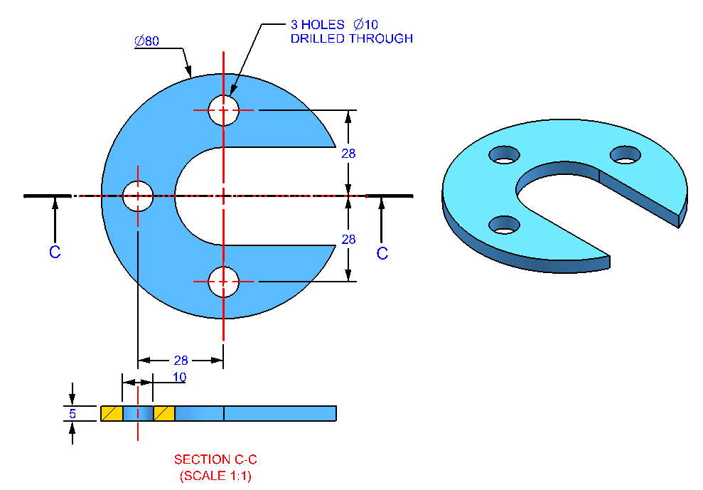

Documentation Of Module 2
Computer Aided Design (CAD)
- The Second Module Of Our Fablab Was of Computer Aided Design (CAD) Which Includes Understanding Of Designing Softwares Like AutoCad And Fusion 360.
- For Accessing These Softwares, We Needed An Account And License For AutoCad. So By Uploading Our College ID's, We Accessed Its One Year License.
- Autodesk Fusion 360 is the first 3D CAD, CAM, CAE and PCB tool of its kind, connecting your entire product development process into one cloud-based software.
- First Of All, We Explored Fusion 360 And Various Tools And Commands In It. We Used Each And Every Command And Tool In Assignment And Mini-Project.
- We Practiced Some Of The Mechanical Components By Drawing It And Extracted It Into 3-D Objects. We Used Various Tools Like Line, Rectangle, Circle, etc To Draw All These Engineering drawings.
- After Drawing All The Assignments, We Were Given A Mini-Project In Which We Have To Draw Any 3-D Object From Youtube And Enhance It By Our Own. Using All My Present Knowledge About Fusion 360, I Prepared A Pipe Fitting Component (Elbow).
- As All The Engineering Drawing Consists Of Diagrams Of Different Views (Top, Bottom, Isometric, etc) Which Are Drawn On Long A2 Drawing Sheets, We Also Followed The Same. Following Is The Image Showing The Drawing Sheet Of My Mini-Project i.e Pipe Fitting Component (Elbow).
- AutoCAD is the original CAD software used by millions around the world. It can be used to create precise 2D and 3D drawings and models, as well as electrical diagrams, construction drawings, and more.
- The Following Are The Tools And Commands Used In AutoCad Software.
- After This, We Were Given Some 2-D Assignments To Draw In AutoCad. Following Are The Images Regarding The Assignments.
- After The 2-D Drawings, We Were Given Some 3-D Objects To Construct And Draw. The Following Images Are Of The Objects Constructed By Me.

Fusion 360

.png)

.png)

.png)

.png)

.png)
.png)
AutoCad
.png)